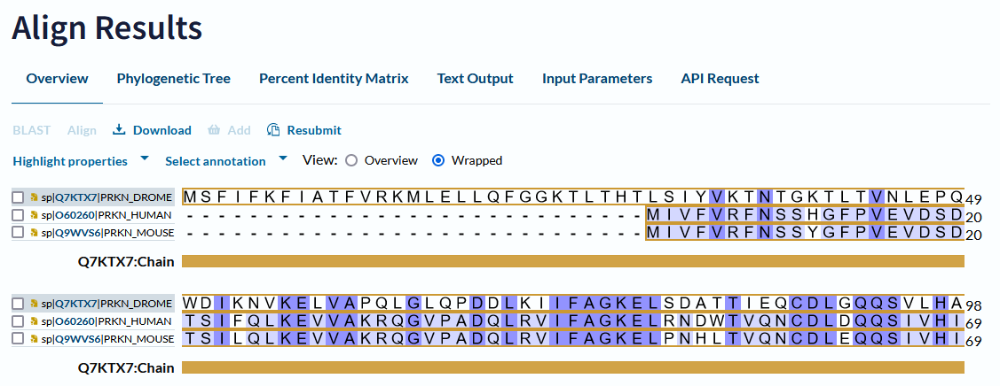

Sequence Profiles and Hidden Markov Models
In 1994, Anders Krogh, Michael Brown, I. Saira Mian, Kimmen
Sjölander, and David Haussler published a paper in the Journal of
Molecular Biology that changed the way bioinformaticians think
about protein families.A. Krogh, M. Brown, I. S. Mian, K. Sjölander, and
D. Haussler. Hidden Markov models in computational biology: Applications
to protein modeling. J. Mol. Biol., 235(5):1501–1531,
1994.
They took a formalism that had been developed two decades
earlier for speech recognition and applied it to protein sequences.
Their argument was that a protein family is not a single sequence but a
statistical process, one that generates sequences according to
position-specific rules. Some positions are nearly invariant across all
family members, perhaps because they form the catalytic site; other
positions accept almost any amino acid. Insertions and deletions are
tolerated at some positions and forbidden at others. A hidden Markov
model captures all of this in a single probabilistic architecture.
What made the Krogh et al. paper so striking was not just the
formalism but the results. On the globin family and on the kinase
family, their HMMs detected remote homologs that pairwise methods missed
entirely. Four years later, Sean Eddy built HMMER, a software package
that made profile HMMs practical for database searches at genome
scale (Eddy 2011).
Eddy’s key insight was that the Forward algorithm, which sums over all
possible alignments rather than picking a single best one, gives a more
sensitive measure of homology than any single-alignment score. The
machinery we develop in this chapter leads directly to HMMER and its
descendants, which today underpin Pfam, InterPro, and most large-scale
protein annotation pipelines.The Pfam database, now in its 36th release, contains
over 20,000 profile HMM families. Every protein in UniProt
is annotated against Pfam using HMMER.
We will build toward profile HMMs in layers. We begin with multiple sequence alignment, the data from which profiles are constructed. We then develop position-specific scoring matrices, the simplest form of a sequence profile. With that foundation, we introduce hidden Markov models as a general framework, develop the three canonical algorithms on a concrete biological example, and finally specialize the framework to the profile HMM architecture used in practice.
Multiple Sequence Alignment
Pairwise alignment, the subject of the previous chapter, compares two sequences at a time. But proteins evolve in families, and a collection of related sequences contains far more information than any single pair. A multiple sequence alignment (MSA) arranges three or more sequences in a matrix where each column represents a putatively homologous position. Gaps are inserted so that residues believed to share common ancestry line up vertically.

The difficulty is computational. For two sequences of lengths \(m\) and \(n\), the Needleman–Wunsch algorithm runs in
\(O(mn)\) time. For \(k\) sequences, exact dynamic programming
requires a \(k\)-dimensional table,
giving \(O(L^k)\) time and space where
\(L\) is a typical sequence length.
This is NP-hard in general (Durbin et al. 1998).The NP-hardness of MSA was proven by L. Wang and
T. Jiang in 1994 for the sum-of-pairs objective.
No one aligns more than a handful of sequences
exactly.
Progressive Alignment
The workhorse approximation is progressive alignment, the strategy
behind CLUSTAL W and its successor CLUSTAL \(\Omega\). The idea is straightforward.
First, compute all \(\binom{k}{2}\)
pairwise alignments and extract a distance matrix from the pairwise
scores. Second, build a guide tree from the distance matrix, typically
by neighbor-joining or UPGMA. Third, align the sequences following the
guide tree from leaves to root: align the two closest sequences first,
then successively align each next-closest sequence or group to the
growing alignment.J. D. Thompson, D. G. Higgins, and T. J. Gibson.
CLUSTAL W: improving the sensitivity of progressive multiple sequence
alignment through sequence weighting, position-specific gap penalties,
and weight matrix choice. Nucleic Acids Res., 22(22):4673–4680,
1994.
Progressive alignment is fast, \(O(k^2 L^2)\) in practice, but it has a well-known flaw: errors made at early stages propagate upward and are never corrected. If the guide tree is wrong, or if two sequences are misaligned at the first merge, every subsequent addition inherits that error.
Consistency-Based Methods
T-Coffee addresses the error-propagation problem by incorporating information from all pairwise alignments into each progressive step (Notredame, Higgins, and Heringa 2000). The key idea is consistency, which holds that if residue \(x_i\) aligns with \(z_k\), and \(z_k\) aligns with \(y_j\), then \(x_i\) and \(y_j\) should also align. T-Coffee builds a library of pairwise alignments and uses this three-way consistency to re-weight alignment scores before running progressive alignment.
In practice, T-Coffee and its extension 3D-Coffee (which incorporates
structural information) produce more accurate alignments than CLUSTAL W
on benchmarks like BAliBASE, especially in the “twilight zone” below 25%
sequence identity where progressive methods struggle most. The tradeoff
is speed: T-Coffee is considerably slower than CLUSTAL \(\Omega\) and does not scale well beyond a
few hundred sequences. For building profile HMMs from large families,
CLUSTAL \(\Omega\) or MAFFT are the
more common choices.MAFFT uses a fast Fourier transform to identify
homologous segments, achieving accuracy comparable to T-Coffee at a
fraction of the cost.
Position-Specific Scoring Matrices
Given a multiple sequence alignment, the simplest summary of a protein family is a position-specific scoring matrix (PSSM), also called a sequence profile. Each column of the MSA becomes a column of the PSSM. The matrix has \(L\) columns (one per alignment position) and 20 rows (one per amino acid).
Construction from MSA Columns
Consider column \(j\) of the MSA.
Let \(n_{ja}\) denote the number of
times amino acid \(a\) appears in that
column, and let \(N_j = \sum_a n_{ja}\)
be the total number of (non-gap) residues. The observed frequency is
\(f_{ja} = n_{ja}/N_j\). We compare
this to a background frequency \(p_a\)
representing the expected frequency of amino acid \(a\) in random protein sequence. The PSSM
entry is the log-odds score: \[\label{eq:pssm-entry}
S(j, a) = \log_2 \frac{f_{ja}}{p_a}.\] A positive score means
amino acid \(a\) is enriched at
position \(j\) relative to background;
a negative score means it is depleted. To score a new sequence \(x_1 x_2 \cdots x_L\) against the PSSM, we
simply sum the entries: \[\label{eq:pssm-score}
\text{Score}(x) = \sum_{j=1}^{L} S(j, x_j).\] This is
equivalent to computing the log-likelihood ratio between a model in
which each position is drawn independently from the column frequencies
and a null model in which each position is drawn from the background
distribution.The independence assumption across positions is a
simplification. Real proteins have correlated positions, a fact that
direct coupling analysis (DCA) and related methods attempt to capture.
We discuss these in Chapter 7.
Pseudocounts and Dirichlet Priors
Raw frequency estimates fail when data is limited. If an MSA has only 10 sequences and tryptophan never appears at position \(j\), the raw estimate gives \(f_{jW} = 0\), which produces \(S(j, W) = -\infty\). This is absurd: a single tryptophan at that position should not make the score infinitely bad. The problem is that we are estimating a 20-dimensional probability distribution from a small sample.
The standard fix is to add pseudocounts.Pseudocounts are the frequentist analog of a Bayesian
prior. The distinction is mostly philosophical for our purposes; the
formulas are identical.
The simplest approach replaces \(n_{ja}\) with \(n_{ja} + \alpha_a\), where \(\alpha_a > 0\) is a pseudocount for
amino acid \(a\). The estimated
probability becomes: \[\label{eq:pseudocounts}
\hat{p}_{ja} = \frac{n_{ja} + \alpha_a}{N_j + \sum_{a'}
\alpha_{a'}}.\] If we set \(\alpha_a = p_a\) (the background
frequencies) and choose the total pseudocount weight to be small
compared to \(N_j\), we get a gentle
regularization: unobserved amino acids receive a small positive
probability proportional to their background frequency, while the
estimates for well-sampled amino acids are barely changed.
The Bayesian interpretation makes this more principled. We place a
Dirichlet prior on the probability vector \(\bm{\theta}_j = (\theta_{j1}, \ldots,
\theta_{j,20})\) for column \(j\): \[\label{eq:dirichlet-prior}
p(\bm{\theta}_j) = \text{Dir}(\bm{\theta}_j \mid \bm{\alpha}) =
\frac{\Gamma(\sum_a \alpha_a)}{\prod_a \Gamma(\alpha_a)}
\prod_{a=1}^{20} \theta_{ja}^{\alpha_a - 1}.\] The Dirichlet is
conjugate to the multinomial, so after observing counts \(\{n_{ja}\}\), the posterior is also
Dirichlet: \[\label{eq:dirichlet-posterior}
p(\bm{\theta}_j \mid \{n_{ja}\}) = \text{Dir}(\bm{\theta}_j \mid
\alpha_1 + n_{j1}, \ldots, \alpha_{20} + n_{j,20}).\] The
posterior mean gives exactly [eq:pseudocounts]. The art lies in
choosing \(\bm{\alpha}\). Durbin et
al. describe mixtures of Dirichlet distributions, where each component
captures a different “type” of amino acid distribution (hydrophobic core
positions, surface positions, conserved catalytic sites, etc.) (Durbin et al. 1998).
The software HMMER uses a nine-component Dirichlet mixture trained on
Blocks, a curated database of ungapped alignments.The Dirichlet mixture parameters are estimated by
maximum likelihood from a large training set of alignment columns. This
is a form of empirical Bayes.
PSI-BLAST and Iterative Profile Construction
PSI-BLAST (Position-Specific Iterated BLAST) automates the construction and use of PSSMs for database searching (Altschul et al. 1997). The procedure works as follows. Run a standard BLAST search with a query sequence. From the significant hits, construct an MSA and compute a PSSM. Use the PSSM to search the database again, this time scoring each target position by the profile rather than a fixed substitution matrix. From the expanded set of hits, build a new PSSM. Repeat until convergence or for a fixed number of iterations.
Each iteration typically detects more distant homologs, because the profile captures family-specific patterns that a single query sequence cannot. But there is a danger: if a false positive enters the profile at iteration \(k\), it corrupts all subsequent iterations and the profile “drifts” away from the true family. In practice, PSI-BLAST works well for 3–5 iterations with a stringent inclusion threshold (e.g., \(E < 0.001\)), but requires care and manual inspection of the growing hit list.
Hidden Markov Models
A PSSM treats each alignment column independently and has no mechanism for insertions or deletions. If a new family member has an extra residue between positions 7 and 8 of the profile, the PSSM has no way to accommodate it: the insertion pushes all downstream residues out of register, and the score collapses. Hidden Markov models solve this problem by treating alignment as a probabilistic process that moves through a sequence of states, some of which emit residues and some of which do not.
Formal Definition
A hidden Markov model consists of the following components:
A set of \(K\) states \(Q = \{q_1, q_2, \ldots, q_K\}\).
An observation alphabet \(\mathcal{O}\). For DNA, \(\mathcal{O} = \{A, C, G, T\}\); for proteins, \(|\mathcal{O}| = 20\).
Transition probabilities \(a_{ij} = P(s_t = q_j \mid s_{t-1} = q_i)\) for all \(i, j \in \{1, \ldots, K\}\), where \(s_t\) denotes the state at time \(t\). These satisfy \(\sum_j a_{ij} = 1\) for each \(i\).
Emission probabilities \(b_j(k) = P(o_t = k \mid s_t = q_j)\) for each state \(q_j\) and each symbol \(k \in \mathcal{O}\).
Initial state probabilities \(\pi_j = P(s_1 = q_j)\) for each state \(q_j\).
We denote the full model by \(\lambda = (\bm{A}, \bm{B}, \bm{\pi})\) where \(\bm{A} = [a_{ij}]\), \(\bm{B} = [b_j(k)]\), and \(\bm{\pi} = [\pi_j]\).
The “hidden” in HMM refers to the fact that we observe the output sequence \(O = o_1, o_2, \ldots, o_T\) but do not observe the state sequence \(S = s_1, s_2, \ldots, s_T\). The state sequence is a latent variable. The probability of a particular observation sequence given a particular state sequence factors as: \[\label{eq:hmm-joint} P(O, S \mid \lambda) = \pi_{s_1} \, b_{s_1}(o_1) \prod_{t=2}^{T} a_{s_{t-1}, s_t} \, b_{s_t}(o_t).\] This factorization is the Markov property: the future state depends only on the current state, not on the full history.
A Concrete Example: CpG Islands
Before working with abstract states and symbols, we ground the
formalism in a biological example that appears in many computational
biology courses.This example is adapted from the MIT course 7.91J /
7.36J, Foundations of Computational and Systems Biology, taught by
C. Burge, D. Gifford, and E. Fraenkel.
In vertebrate genomes, the dinucleotide CG (written CpG
to distinguish it from the base pair C–G) is underrepresented because
cytosines in CpG contexts are frequently methylated and subsequently
deaminated to thymine. But certain regions near gene promoters, called
CpG islands, escape this methylation and retain the expected CpG
frequency. We want a model that, given a DNA sequence, labels each
position as belonging to a CpG island (\(+\)) or to normal genome (\(-\)).
We define a two-state HMM with states \(Q = \{I, G\}\) (Island, Genome) and alphabet \(\mathcal{O} = \{A, C, G, T\}\). The transition matrix is: \[\label{eq:cpg-transition} \bm{A} = \begin{pmatrix} a_{II} & a_{IG} \\ a_{GI} & a_{GG} \end{pmatrix} = \begin{pmatrix} 0.95 & 0.05 \\ 0.10 & 0.90 \end{pmatrix}.\] The emission probabilities are: \[\label{eq:cpg-emission} \begin{aligned} b_I(A) &= 0.15, & b_I(C) &= 0.35, & b_I(G) &= 0.35, & b_I(T) &= 0.15, \\ b_G(A) &= 0.30, & b_G(C) &= 0.20, & b_G(G) &= 0.20, & b_G(T) &= 0.30. \end{aligned}\] The island state emits C and G with higher probability (reflecting the high GC content of CpG islands), while the genome state favors A and T. The transition probabilities encode the fact that both islands and non-islands are extended regions: once you enter an island, you tend to stay for many positions (\(a_{II} = 0.95\)), and similarly for the genome state (\(a_{GG} = 0.90\)).
We set initial probabilities \(\pi_I = 0.5\) and \(\pi_G = 0.5\), reflecting ignorance about whether the sequence starts in an island or not. This is our running example for the rest of the section.
The Three Canonical HMM Problems
Three problems arise naturally for any HMM, and their solutions constitute the algorithmic core of the field (Rabiner 1989). Rabiner’s 1989 tutorial, still one of the clearest expositions, called them the evaluation problem, the decoding problem, and the training problem. We treat each in turn.
Problem 1: Evaluation (The Forward Algorithm)
Given a model \(\lambda\) and an observation sequence \(O = o_1, \ldots, o_T\), compute \(P(O \mid \lambda)\), the probability that the model generated the sequence.
The naive approach sums over all possible state sequences: \[\label{eq:naive-eval} P(O \mid \lambda) = \sum_{S} P(O, S \mid \lambda) = \sum_{s_1, \ldots, s_T} \pi_{s_1} b_{s_1}(o_1) \prod_{t=2}^{T} a_{s_{t-1}, s_t} b_{s_t}(o_t).\] There are \(K^T\) possible state sequences, so this sum is intractable for any but the shortest sequences. The forward algorithm computes the same quantity in \(O(K^2 T)\) time by dynamic programming.
Define the forward variable: \[\label{eq:forward-def} \alpha_t(i) = P(o_1, o_2, \ldots, o_t, s_t = q_i \mid \lambda).\] This is the joint probability of having observed the first \(t\) symbols and being in state \(q_i\) at time \(t\). We compute it recursively.
Initialization.
At \(t = 1\): \[\label{eq:forward-init} \alpha_1(i) = \pi_i \, b_i(o_1), \quad i = 1, \ldots, K.\]
Recursion.
For \(t = 2, 3, \ldots, T\): \[\label{eq:forward-recursion} \alpha_t(j) = \left[ \sum_{i=1}^{K} \alpha_{t-1}(i) \, a_{ij} \right] b_j(o_t), \quad j = 1, \ldots, K.\] The intuition is that to be in state \(q_j\) at time \(t\), we could have arrived from any state \(q_i\) at time \(t-1\). We sum over all such predecessors, weighting each by the transition probability \(a_{ij}\), and then multiply by the probability of emitting the observed symbol \(o_t\) in state \(q_j\).
Termination.
The total probability of the observation sequence is: \[\label{eq:forward-termination} P(O \mid \lambda) = \sum_{i=1}^{K} \alpha_T(i).\] This works because the events “observed \(O\) and ended in state \(q_i\)” for \(i = 1, \ldots, K\) are mutually exclusive and exhaustive.
The time complexity is \(O(K^2 T)\):
at each of \(T\) time steps, we compute
\(K\) forward variables, each requiring
a sum over \(K\) predecessors. The
space complexity is \(O(KT)\) if we
store the full \(\alpha\) table, or
\(O(K)\) if we only need the final
probability and overwrite as we go.In practice we always store the full table, because we
need it for the backward algorithm and for parameter estimation.
Problem 2: Decoding (The Viterbi Algorithm)
Given a model \(\lambda\) and an observation sequence \(O\), find the state sequence \(S^* = s_1^*, \ldots, s_T^*\) that maximizes \(P(S \mid O, \lambda)\). This is the most likely explanation of the observed data.
The structure is almost identical to the forward algorithm, but with \(\max\) replacing \(\sum\). Define: \[\label{eq:viterbi-def} \delta_t(i) = \max_{s_1, \ldots, s_{t-1}} P(s_1, \ldots, s_{t-1}, s_t = q_i, o_1, \ldots, o_t \mid \lambda).\] This is the probability of the most probable path ending in state \(q_i\) at time \(t\).
Initialization.
\[\label{eq:viterbi-init} \delta_1(i) = \pi_i \, b_i(o_1), \quad \psi_1(i) = 0.\]
Recursion.
For \(t = 2, \ldots, T\): \[\label{eq:viterbi-recursion} \delta_t(j) = \max_{1 \le i \le K} \left[ \delta_{t-1}(i) \, a_{ij} \right] \cdot b_j(o_t),\] \[\label{eq:viterbi-backtrack} \psi_t(j) = \argmax_{1 \le i \le K} \left[ \delta_{t-1}(i) \, a_{ij} \right].\] The array \(\psi_t(j)\) records which predecessor state achieved the maximum, enabling us to reconstruct the optimal path.
Termination.
\[\label{eq:viterbi-termination} P^* = \max_{1 \le i \le K} \delta_T(i), \qquad s_T^* = \argmax_{1 \le i \le K} \delta_T(i).\]
Backtracking.
For \(t = T-1, T-2, \ldots, 1\): \[\label{eq:viterbi-path} s_t^* = \psi_{t+1}(s_{t+1}^*).\]
In practice, we work in log space to avoid numerical underflow,
replacing products with sums and \(\max\) over sums.Working in log space converts \(\delta_t(j) = \max_i [\delta_{t-1}(i) \cdot
a_{ij}] \cdot b_j(o_t)\) into \(\log
\delta_t(j) = \max_i [\log \delta_{t-1}(i) + \log a_{ij}] + \log
b_j(o_t)\).
Worked Example: Viterbi on the CpG Model
We illustrate the Viterbi algorithm on a short sequence using the CpG island model from 4.3.2. Consider the observed sequence \(O = C, G, C, G\) (that is, \(o_1 = C\), \(o_2 = G\), \(o_3 = C\), \(o_4 = G\)). We work in log base 2 for readability.
Initialization (\(t = 1\), \(o_1 = C\)).
\[\begin{aligned} \log_2 \delta_1(I) &= \log_2 \pi_I + \log_2 b_I(C) = \log_2(0.5) + \log_2(0.35) = -1.00 + (-1.51) = -2.51, \notag \\ \log_2 \delta_1(G) &= \log_2 \pi_G + \log_2 b_G(C) = \log_2(0.5) + \log_2(0.20) = -1.00 + (-2.32) = -3.32. \notag \end{aligned}\] State \(I\) is already more probable.
Recursion (\(t = 2\), \(o_2 = G\)).
For state \(I\): \[\begin{aligned} \text{from } I&: \log_2 \delta_1(I) + \log_2 a_{II} = -2.51 + \log_2(0.95) = -2.51 + (-0.07) = -2.58, \notag \\ \text{from } G&: \log_2 \delta_1(G) + \log_2 a_{GI} = -3.32 + \log_2(0.10) = -3.32 + (-3.32) = -6.64. \notag \end{aligned}\] Maximum is \(-2.58\) from \(I\), so \(\psi_2(I) = I\). Then \(\log_2 \delta_2(I) = -2.58 + \log_2(0.35) = -2.58 + (-1.51) = -4.10\).
For state \(G\): \[\begin{aligned} \text{from } I&: -2.51 + \log_2(0.05) = -2.51 + (-4.32) = -6.83, \notag \\ \text{from } G&: -3.32 + \log_2(0.90) = -3.32 + (-0.15) = -3.47. \notag \end{aligned}\] Maximum is \(-3.47\) from \(G\), so \(\psi_2(G) = G\). Then \(\log_2 \delta_2(G) = -3.47 + \log_2(0.20) = -3.47 + (-2.32) = -5.79\).
Recursion (\(t = 3\), \(o_3 = C\)).
For state \(I\): \[\begin{aligned} \text{from } I&: -4.10 + (-0.07) = -4.17, \notag \\ \text{from } G&: -5.79 + (-3.32) = -9.11. \notag \end{aligned}\] Maximum from \(I\), \(\psi_3(I) = I\). \(\log_2 \delta_3(I) = -4.17 + (-1.51) = -5.69\).
For state \(G\): \[\begin{aligned} \text{from } I&: -4.10 + (-4.32) = -8.42, \notag \\ \text{from } G&: -5.79 + (-0.15) = -5.94. \notag \end{aligned}\] Maximum from \(G\), \(\psi_3(G) = G\). \(\log_2 \delta_3(G) = -5.94 + (-2.32) = -8.27\).
Recursion (\(t = 4\), \(o_4 = G\)).
For state \(I\): \[\begin{aligned} \text{from } I&: -5.69 + (-0.07) = -5.76, \notag \\ \text{from } G&: -8.27 + (-3.32) = -11.59. \notag \end{aligned}\] Maximum from \(I\), \(\psi_4(I) = I\). \(\log_2 \delta_4(I) = -5.76 + (-1.51) = -7.27\).
For state \(G\): \[\begin{aligned} \text{from } I&: -5.69 + (-4.32) = -10.01, \notag \\ \text{from } G&: -8.27 + (-0.15) = -8.42. \notag \end{aligned}\] Maximum from \(G\), \(\psi_4(G) = G\). \(\log_2 \delta_4(G) = -8.42 + (-2.32) = -10.73\).
Termination and backtracking.
\(s_4^* = I\) (since \(-7.27 > -10.73\)). Backtracking: \(s_3^* = \psi_4(I) = I\), \(s_2^* = \psi_3(I) = I\), \(s_1^* = \psi_2(I) = I\). The Viterbi path is \(I, I, I, I\). The model assigns the entire CGCG sequence to the CpG island state, which makes sense: the sequence is CG-rich, and switching to the genome state incurs transition penalties that outweigh any benefit.
If we ran the same computation on a sequence like \(A, T, A, T\), we would find the Viterbi
path is \(G, G, G, G\), assigning it to
normal genome. Sequences with mixed composition would produce paths that
switch between states, identifying island boundaries.In real applications, the two-state CpG model is too
simple. More sophisticated models use duration states or semi-Markov
structures to enforce minimum island lengths.
Problem 3: Training (The Baum–Welch Algorithm)
Given observation sequences (but not state sequences), estimate the model parameters \(\lambda = (\bm{A}, \bm{B}, \bm{\pi})\) that maximize \(P(O \mid \lambda)\). This is the learning problem. If we could observe the state sequences directly, parameter estimation would be simple counting. We cannot, so we use expectation-maximization (EM), which in the HMM context is called the Baum–Welch algorithm.
The backward variable.
We need a companion to the forward variable. Define: \[\label{eq:backward-def} \beta_t(i) = P(o_{t+1}, o_{t+2}, \ldots, o_T \mid s_t = q_i, \lambda).\] This is the probability of the future observations given that we are in state \(q_i\) at time \(t\).
Initialization.
\[\label{eq:backward-init} \beta_T(i) = 1, \quad i = 1, \ldots, K.\]
Recursion.
For \(t = T-1, T-2, \ldots, 1\): \[\label{eq:backward-recursion} \beta_t(i) = \sum_{j=1}^{K} a_{ij} \, b_j(o_{t+1}) \, \beta_{t+1}(j).\] The logic mirrors the forward algorithm but runs backward in time: to compute the probability of future observations from state \(q_i\) at time \(t\), we consider all possible next states \(q_j\), weighted by the transition probability, the emission at \(t+1\), and the backward probability from \(q_j\) at \(t+1\).
Posterior state and transition probabilities.
With both \(\alpha\) and \(\beta\) in hand, we can compute the posterior probability of being in state \(q_i\) at time \(t\): \[\label{eq:gamma} \gamma_t(i) = P(s_t = q_i \mid O, \lambda) = \frac{\alpha_t(i) \, \beta_t(i)}{P(O \mid \lambda)} = \frac{\alpha_t(i) \, \beta_t(i)}{\sum_{j=1}^{K} \alpha_t(j) \, \beta_t(j)}.\] We can also compute the posterior probability of transitioning from \(q_i\) to \(q_j\) between times \(t\) and \(t+1\): \[\label{eq:xi} \xi_t(i, j) = P(s_t = q_i, s_{t+1} = q_j \mid O, \lambda) = \frac{\alpha_t(i) \, a_{ij} \, b_j(o_{t+1}) \, \beta_{t+1}(j)}{P(O \mid \lambda)}.\] These two quantities are related by \(\gamma_t(i) = \sum_j \xi_t(i, j)\).
Re-estimation formulas.
The M-step of EM uses \(\gamma\) and
\(\xi\) as soft counts to update the
parameters. The new transition probabilities are: \[\label{eq:reestimate-a}
\hat{a}_{ij} = \frac{\sum_{t=1}^{T-1} \xi_t(i, j)}{\sum_{t=1}^{T-1}
\gamma_t(i)}.\] The numerator is the expected number of
transitions from \(q_i\) to \(q_j\); the denominator is the expected
number of times we are in state \(q_i\)
(excluding the last time step, since there is no transition from \(t = T\)). The new emission probabilities
are: \[\label{eq:reestimate-b}
\hat{b}_j(k) = \frac{\sum_{t=1}^{T} \gamma_t(j) \, \mathbf{1}[o_t =
k]}{\sum_{t=1}^{T} \gamma_t(j)}.\] The numerator is the expected
number of times we emit symbol \(k\)
from state \(q_j\); the denominator is
the expected number of times we are in state \(q_j\). The new initial probabilities are:
\[\label{eq:reestimate-pi}
\hat{\pi}_i = \gamma_1(i).\] Each iteration of Baum–Welch (one
E-step computing \(\gamma\) and \(\xi\), followed by one M-step applying the
re-estimation formulas) is guaranteed to increase \(P(O \mid \lambda)\), or leave it unchanged
if we are at a fixed point.This monotonicity follows from the general EM
convergence theorem. Baum–Welch converges to a local maximum, not
necessarily the global one, so initialization matters. In practice,
multiple random restarts or informed initialization from a related model
is standard.
The algorithm converges when the change in log-likelihood
falls below a threshold.
Profile HMMs for Protein Families
We now specialize the general HMM framework to the problem that motivated this chapter: modeling protein families. A profile HMM is an HMM with a particular architecture designed to represent a multiple sequence alignment. The architecture was introduced by Krogh et al. in 1994 and refined by Eddy and others over the following decade.
Architecture
A profile HMM for a family with \(L\) consensus positions has three types of states arranged in \(L\) columns, plus flanking states for entry and exit.
Match states \(M_1, M_2, \ldots, M_L\).
Each match state corresponds to a consensus column of the alignment. \(M_j\) emits amino acids according to a position-specific distribution: \(b_{M_j}(a)\) is the probability of amino acid \(a\) at position \(j\). These emission distributions are the probabilistic analog of PSSM columns.
Insert states \(I_0, I_1, \ldots, I_L\).
Insert states model residues that appear between consensus positions. \(I_j\) sits between match states \(M_j\) and \(M_{j+1}\) and emits amino acids with a distribution that is typically close to the background frequency. Self-transitions \(a_{I_j \to I_j}\) allow multiple inserted residues at the same position.
Delete states \(D_1, D_2, \ldots, D_L\).
Delete states are silent: they emit nothing. \(D_j\) represents the event that a sequence skips consensus position \(j\). Passing through \(D_j\) instead of \(M_j\) means the sequence has a deletion at position \(j\) relative to the family consensus.
The transitions between these states follow a specific pattern. From
each column’s match state \(M_j\),
transitions go to \(M_{j+1}\), \(I_j\), and \(D_{j+1}\). From insert state \(I_j\), transitions go to \(M_{j+1}\), \(I_j\) (self-loop), and \(D_{j+1}\). From delete state \(D_j\), transitions go to \(M_{j+1}\), \(I_{j}\), and \(D_{j+1}\). This gives nine possible
transitions per column, though some are rarely used in practice.The full profile HMM also has begin and end states.
HMMER uses a “plan 7” architecture named for the seven types of
transitions in its original design. The current HMMER3 model has evolved
beyond this but retains the name.
The total number of free parameters is considerable. Each of the \(L\) match states has 19 free emission parameters (20 amino acid probabilities summing to 1). Each column has up to 9 transition parameters (also subject to sum-to-1 constraints). For a typical Pfam model with \(L = 200\) consensus positions, this means roughly \(200 \times 19 + 200 \times 7 \approx 5{,}200\) free parameters. This is far more than a PSSM, which has \(200 \times 19 = 3{,}800\) parameters and cannot model insertions or deletions at all.
Relationship to PSSMs
If we strip away the insert and delete states and keep only the match states with fixed transitions \(a_{M_j \to M_{j+1}} = 1\), the profile HMM reduces to a PSSM. Scoring a sequence against this reduced model gives exactly the PSSM score from [eq:pssm-score]. The profile HMM generalizes the PSSM in two ways. First, it handles insertions and deletions probabilistically: the insert and delete states allow the model to align sequences of different lengths to the consensus without ad hoc gap penalties. Second, the Forward algorithm sums over all possible alignments of the sequence to the model, rather than committing to a single alignment. This is why profile HMMs are more sensitive than PSSMs for detecting remote homologs: two distantly related proteins might align to the family consensus in different ways, and the Forward score accounts for all of them.
Building a Profile HMM from an MSA
The construction proceeds in three steps.
Step 1: Assign columns to match or insert.
Not every column of the MSA becomes a match state. Columns with more
than 50% gaps are typically designated as insert columns; the rest
become match columns. The number of match columns becomes \(L\), the length of the model. HMMER uses a
more sophisticated heuristic based on sequence weighting and entropy,
but the principle is the same.A column full of gaps carries no information about the
family consensus and would only add noise to the model. The 50%
threshold is a common rule of thumb.
Step 2: Estimate emission probabilities.
For each match state \(M_j\), count the amino acids in the corresponding MSA column (among the non-gap characters). Apply pseudocounts or Dirichlet mixture priors exactly as in 4.2.2 to obtain \(b_{M_j}(a)\) for each amino acid \(a\). For insert states, emission probabilities are usually set to background frequencies \(p_a\) or estimated from the residues that fall in insert columns.
Step 3: Estimate transition probabilities.
Count the transitions observed in the MSA. For each sequence and each pair of adjacent model positions, determine whether the sequence passes through \(M_j \to M_{j+1}\), \(M_j \to I_j\), \(M_j \to D_{j+1}\), and so on. These counts, after adding pseudocounts, give the transition probability estimates. Sequences with many insertions at a position will contribute to \(a_{M_j \to I_j}\); sequences that skip a position will contribute to \(a_{M_j \to D_{j+1}}\) or \(a_{D_j \to D_{j+1}}\).
With emission and transition parameters in hand, the profile HMM is fully specified. We can use the Forward algorithm to score a new sequence against the model (evaluation), the Viterbi algorithm to find the best alignment of the sequence to the model (decoding), or Baum–Welch to iteratively refine parameters if given unaligned training sequences.
The HMMER3 Acceleration Pipeline
A profile HMM search against a protein database requires computing the Forward probability for every sequence in the database. The Forward algorithm for a profile HMM of length \(L\) on a target sequence of length \(N\) runs in \(O(LN)\) time. For Pfam’s 20,000 models searched against UniProt’s 250 million sequences, this is on the order of \(10^{15}\) operations per model. That is too slow, even on modern hardware.
HMMER3 solves this with a multi-stage filter pipeline (Eddy 2011). The idea is to use fast, approximate filters to discard the vast majority of non-homologous sequences before running the expensive full Forward algorithm on the small fraction that survives.
Stage 1: The MSV Filter
The Multiple Segment Viterbi (MSV) filter is the first and fastest stage. It computes an ungapped, diagonal-only alignment score between the query profile and each target sequence. The model is stripped down to its match states only, with no insert or delete states and no transitions between non-adjacent match states. Scoring reduces to finding the highest-scoring set of ungapped segments that align subsequences of the target to contiguous blocks of match states.
The critical implementation detail is SIMD vectorization.SIMD stands for Single Instruction, Multiple Data.
Modern CPUs can perform the same operation on 16 or 32 bytes
simultaneously using SSE or AVX instructions.
Farrar’s 2007 striped Smith–Waterman algorithm showed
that dynamic programming over a scoring profile can be parallelized
across multiple target residues using SIMD registers. HMMER3 adapts this
approach, processing 16 target residues simultaneously on SSE hardware
(or 32 on AVX). The MSV filter runs at approximately the speed of BLAST
and retains only about 2% of database sequences for further
analysis.
Stage 2: The Viterbi Filter
Sequences passing the MSV filter are rescored with a full gapped Viterbi algorithm using the complete profile HMM (match, insert, and delete states). This is slower than MSV but still much cheaper than the Forward algorithm, because the Viterbi algorithm needs only the single best path rather than the sum over all paths. The Viterbi filter retains roughly 0.5% of the original database. Most of the sequences eliminated at this stage were high-scoring but non-homologous under MSV, typically because of composition bias (e.g., low-complexity regions that happen to match a few match states well).
Stage 3: The Forward Filter
Surviving sequences are scored with the full Forward algorithm, which computes \(P(O \mid \lambda)\) summed over all possible alignments. The Forward score is more sensitive than the Viterbi score because it does not commit to a single alignment. Two distantly related proteins might each have a moderately good alignment to the model, with the Forward score accumulating probability mass from both, while the Viterbi score only reports the better of the two.
The Forward probability is converted to a bit score by comparing to a null model: \[\label{eq:forward-bitscore} S = \log_2 \frac{P(O \mid \text{profile HMM})}{P(O \mid \text{null})}.\] Statistical significance is assessed by fitting the distribution of Forward scores to an extreme value distribution, yielding E-values that account for database size. Sequences with E-values below a reporting threshold (typically \(10^{-3}\) for inclusion in Pfam) are reported as hits.
The Wing-Folding Trick
HMMER3 supports both local alignment (any subsequence of the target can match any sub-model) and “glocal” alignment (the entire model must be used, but only a subsequence of the target). The wing-folding trick implements local alignment without adding extra states to the model.
In a glocal model, entry is only through \(M_1\) and exit only through \(M_L\). To allow local alignment, we need
entry into any \(M_j\) and exit from
any \(M_j\). One approach is to add
explicit entry and exit transitions from special begin and end states,
but this increases the number of transitions and complicates the dynamic
programming. The wing-folding trick instead modifies the boundary
conditions of the DP recursion to implicitly allow entry and exit at any
position, folding the “wings” of the model (the unused portions before
the entry point and after the exit point) into the calculation without
explicitly traversing them. The result is that local alignment has
exactly the same computational cost as glocal alignment.The name comes from a visual analogy: in the profile
HMM diagram, the unused portions of the model at the beginning and end
look like folded wings.
Exercises
PSSM calculation. Consider a three-column MSA with the following amino acid counts at each position (all other amino acids have count 0):
Position 1: Ala = 8, Val = 2. Position 2: Gly = 10. Position 3: Leu = 5, Ile = 3, Val = 2.
Assume uniform background frequencies \(p_a = 0.05\) for all 20 amino acids. Compute the PSSM entries \(S(j, a)\) using [eq:pssm-entry] for each observed amino acid at each position. What is the score of the sequence Ala–Gly–Leu?
Effect of pseudocounts. Using the MSA from Exercise 1, recompute the PSSM entries using [eq:pseudocounts] with \(\alpha_a = 1\) for all amino acids (i.e., a total pseudocount of 20). How do the scores change for abundant versus unobserved amino acids? What happens if you increase the pseudocount to \(\alpha_a = 5\)?
Forward algorithm. Using the CpG island HMM from 4.3.2, compute \(P(O \mid \lambda)\) for \(O = A, C, G\) by filling in the full forward table. Verify that \(\sum_i \alpha_3(i)\) gives the total probability.
Viterbi vs. Forward. For the same model and the sequence \(O = C, G, A, T, C, G\), compute both the Viterbi path and the posterior state probabilities \(\gamma_t(i)\) for each position. Are there positions where the Viterbi path assigns state \(I\) but \(\gamma_t(I) < 0.5\)? What does this mean for the reliability of the Viterbi decoding?
Profile HMM construction. Given the following MSA of four sequences aligned to five columns:
A C - G T A C C G T A C C G - - C - G TApply the 50% gap rule to determine which columns become match states and which become insert states. For each match state, compute the emission probabilities using a pseudocount of \(\alpha_a = 0.25\) per nucleotide (total pseudocount 1.0).
HMMER3 filter sensitivity. Suppose the MSV filter has a sensitivity of 99.5% (retains 99.5% of true homologs) and the Viterbi filter has a sensitivity of 99%. What is the overall sensitivity of the two-stage pre-filter? If the true homologs comprise 0.01% of the database, and the MSV filter retains 2% of all sequences while the Viterbi filter retains 25% of MSV survivors, how many sequences reach the Forward stage for a database of 100 million sequences?
Chapter Notes
The hidden Markov model formalism was developed by Leonard Baum and colleagues at the Institute for Defense Analyses in the late 1960s, originally for classified work on signal processing. The algorithms became widely known through Rabiner’s 1989 tutorial (Rabiner 1989), written for the speech recognition community, which remains one of the clearest introductions to the subject. The application to biological sequences began in the early 1990s with work by Gary Churchill on multiple alignment and by Krogh, Mian, and Haussler on gene finding. The Krogh et al. 1994 paper on profile HMMs for protein families was a landmark that connected the statistical learning perspective with the biological problem of protein family classification.
Eddy’s HMMER software has gone through three major versions, each representing a different approach to the speed-versus-sensitivity tradeoff (Eddy 2011). HMMER1 (1995) implemented the profile HMM framework of Krogh et al. but was far slower than BLAST. HMMER2 (1998) added Viterbi-based filtering and was competitive with PSI-BLAST in sensitivity, but still roughly 100 times slower. HMMER3 (2011) introduced the MSV/Viterbi/Forward filter pipeline described in 4.6, achieving sensitivity equal to or greater than HMMER2 at speeds comparable to BLAST. The key technical contributions were the MSV filter, the use of SIMD vectorization following Farrar’s striped algorithm, and the wing-folding trick for efficient local alignment. Today HMMER3 is the engine behind Pfam, InterPro, and the protein annotation pipelines of most genome projects.
Position-specific scoring matrices predate profile HMMs. Gribskov, McLachlan, and Eisenberg introduced sequence profiles in 1987, and Henikoff and Henikoff developed the Blocks database of ungapped local alignments that was used to train substitution matrices and Dirichlet priors. PSI-BLAST (Altschul et al. 1997) made iterative profile searches widely accessible through the NCBI BLAST web server. The relationship between PSSMs and profile HMMs is discussed at length in Durbin et al. (Durbin et al. 1998), which also provides the clearest textbook treatment of Dirichlet mixture priors for biological sequence analysis. The use of Bayesian priors for estimating amino acid frequencies from small samples is one of the most successful applications of Bayesian statistics in computational biology, and the Dirichlet mixture approach of Sjölander et al. (1996) remains the standard in HMMER and related tools.
Multiple sequence alignment is a field unto itself, with a long and contentious history of benchmarks and competitions. The BAliBASE, PREFAB, and SABmark benchmarks have driven progress, but all are limited by the difficulty of defining “correct” alignment at low sequence identity. Thompson et al.’s CLUSTAL W (1994) was the most cited bioinformatics paper for many years, and T-Coffee (Notredame, Higgins, and Heringa 2000) introduced the consistency principle that influenced subsequent methods including PROBCONS, MUSCLE, and MAFFT. The current state of the art for very large alignments (\(>10{,}000\) sequences) is represented by CLUSTAL \(\Omega\) and MAFFT, both of which use heuristic guide trees and iterative refinement to scale to the family sizes encountered in modern protein databases.